Services
Welcome to my range of services! I’m here to provide personalized, high-quality solutions tailored to your unique needs. Whether you’re looking to build a new website, create a custom app, or solve a tricky tech issue, I’ve got you covered.
Web Development
Need a professional, responsive website? I specialize in creating sleek, user-friendly
websites that are optimized for performance and designed to engage your audience. Whether
it’s a personal blog, an online store, or a corporate site, I’ll work closely with you to
ensure your vision comes to life in the best way possible.
Game and App Development
Have a great idea for a game or mobile app? Let’s bring it to life! With experience in both
gaming and app development, I can help you build an engaging, functional product that users
will love. From concept to launch, I’ll handle everything from coding to design, making sure
your app or game is intuitive, interactive, and fun to use.
Tech Support
Running into technical issues? I provide reliable tech support to help troubleshoot problems,
maintain smooth operations, and keep your systems running at their best. Whether it’s setting
up software, fixing bugs, or managing updates, I’ll make sure everything works seamlessly for you.
System Design
Looking to optimize your system architecture? I can help design and implement efficient,
scalable systems that meet your specific needs. From database management to network
architecture, I’ll ensure your system is robust, secure, and ready for growth.
Problem Solving
Got a tricky challenge that needs solving? I thrive on tackling complex problems and finding solutions
that make your life easier. Whether it’s optimizing a system, resolving a coding issue, or figuring
out the best approach to a project, I’m here to help. Together, we’ll find the perfect solution to
any technical or development puzzle.
projects
"Here are some of the projects I’ve worked on, showcasing my experience in web development, mobile app creation, and game development. Each project reflects my passion for solving real world problems through innovative technology."
Project 1: [Portfolio templates]
Description: This is a Portfolio website I built for a personal advertisiment
Technologies Used: HTML, CSS, JavaScript
Role: I designed and built the websites
Link:Portfolio project
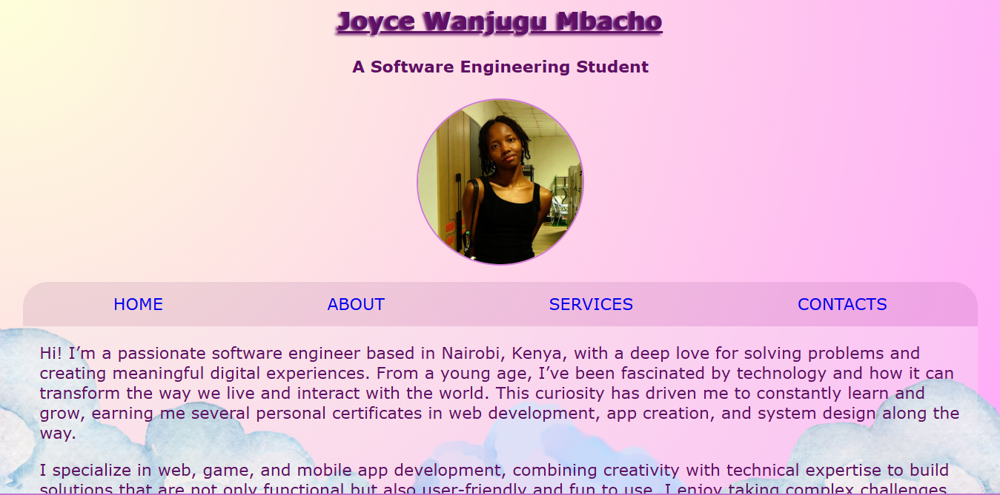
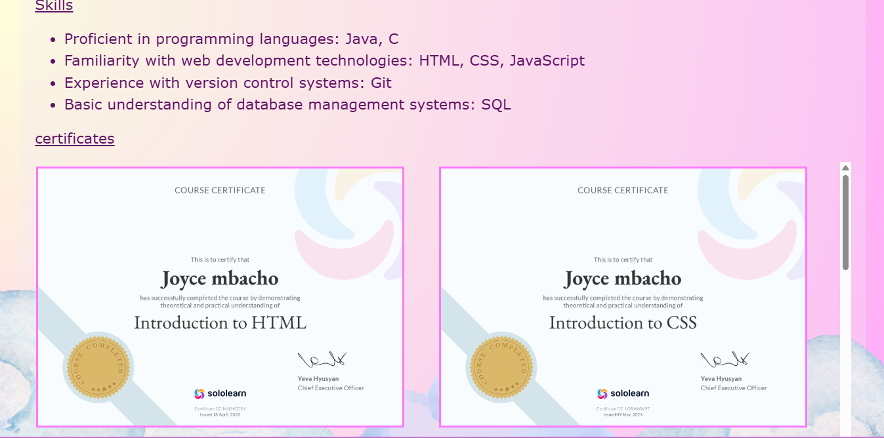
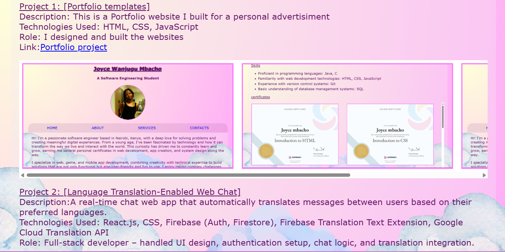
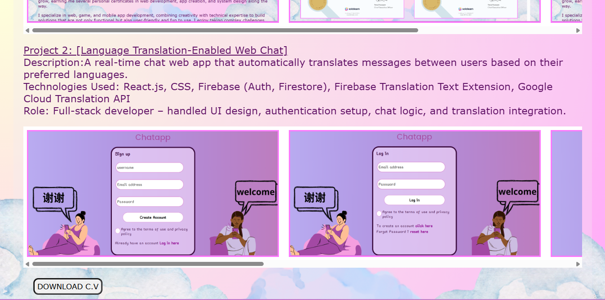
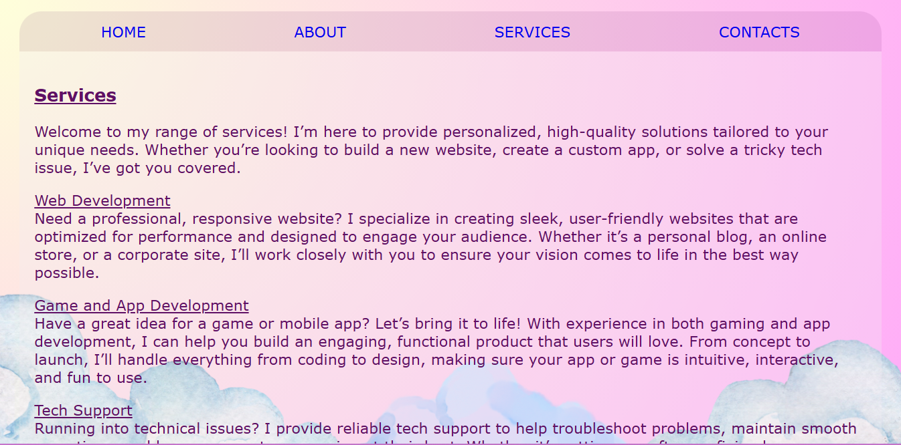
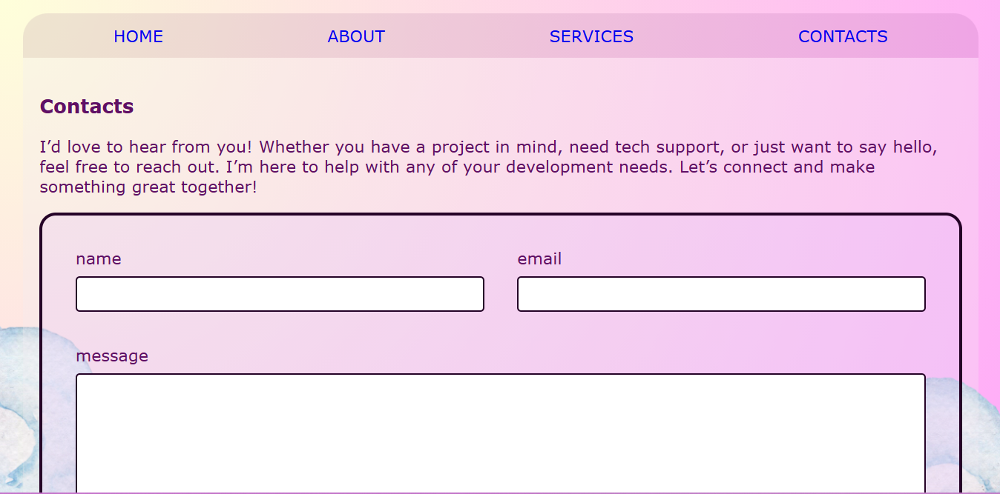
Project 2: [Language Translation-Enabled Web Chat]
Description:A real-time chat web app that automatically translates messages between users based on their preferred languages.
Technologies Used: React.js, CSS, Firebase (Auth, Firestore), Firebase Translation Text Extension, Google Cloud Translation API
Role: Full-stack developer – handled UI design, authentication setup, chat logic, and translation integration.
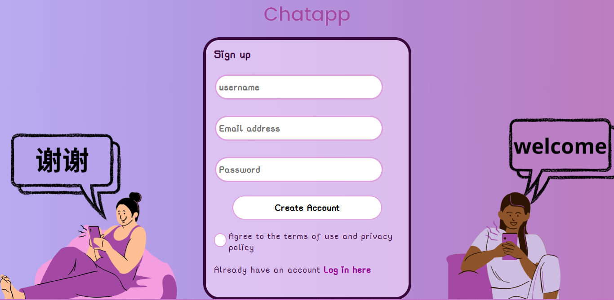
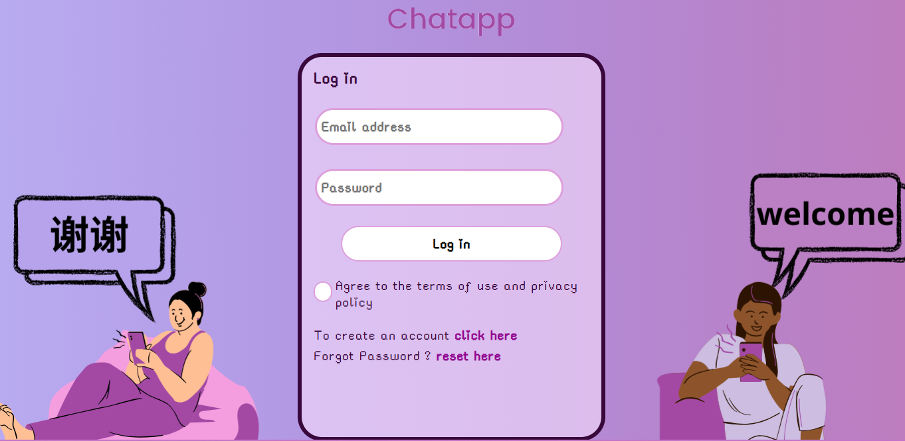
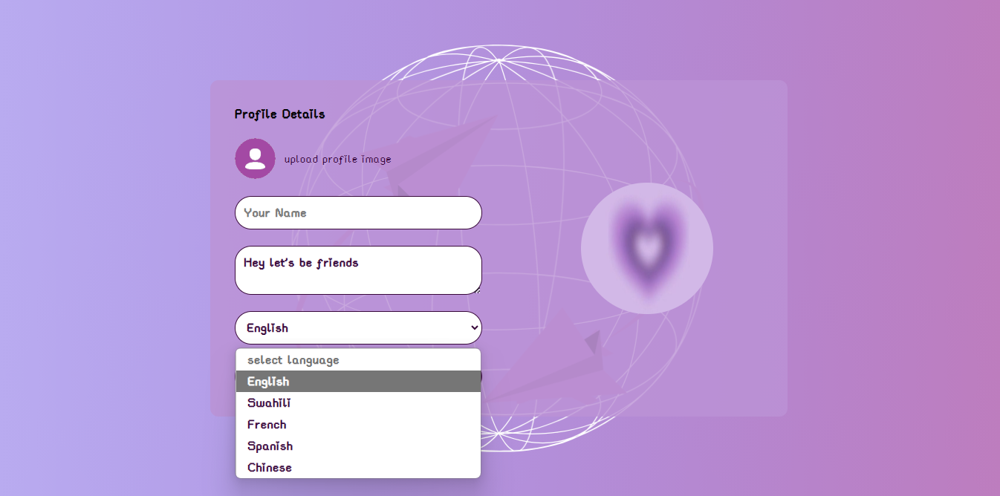
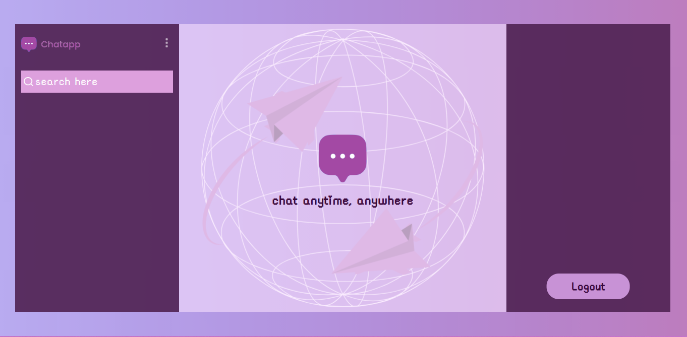
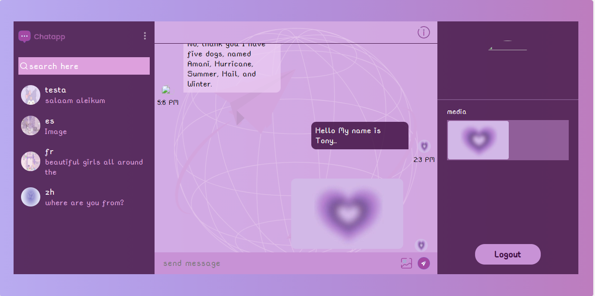
Each project is an opportunity to build something special. Let’s work together to turn your ideas into reality!